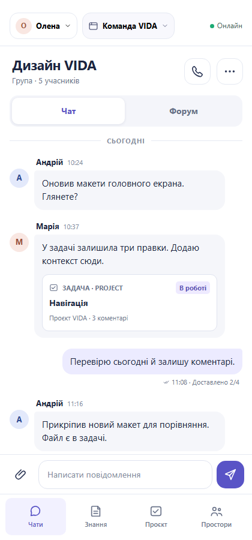

VIDA / UX experiment
Чат: той самий сценарій, чіткіша ієрархія
Порівняння концептів · новий варіант спирається на ui-ux-pro-max, але не є затвердженим дизайном
Було · v2початковий макет
Що покращено
1Менше зорового шуму
Компактні повідомлення й повітря між групами; задача залишається в контексті розмови.
2Стани без підміни понять
«Онлайн» описує пристрій; «Доставлено 2/4» — конкретне повідомлення в групі.
3Стабільна навігація
Persona, Space, Чат/Форум і чотири базові розділи лишилися на звичних місцях.
4Простіші дії
Одна система піктограм, видимі підписи й великі цілі дотику для дзвінка, файлу й надсилання.
Стало · v3тест нової навички

Концепт для обговорення · 22.09.2026 · бренд-палітра й шрифт ще не затверджені